1. События и операции над ними. Относительные частоты и их свойства.

1. События и операции над ними. Относительные частоты и их свойства.
2. Аксиомы ТВ. Дискретные пространства элементарных исходов. Классическое определение вероятности.

3. Элементы комбинаторики. Число выборок.
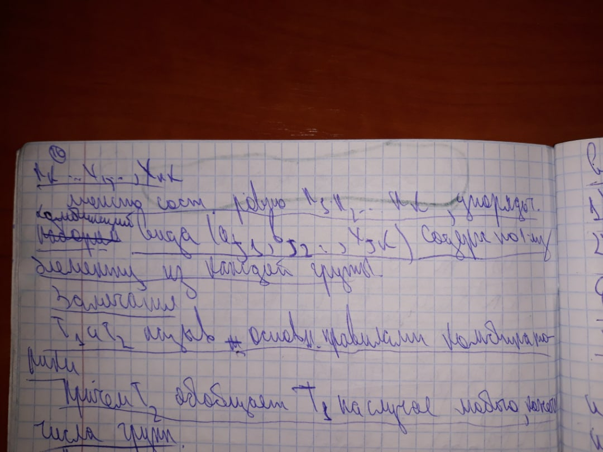4. Размещения, перестановки, сочетания. Свойства сочетаний.
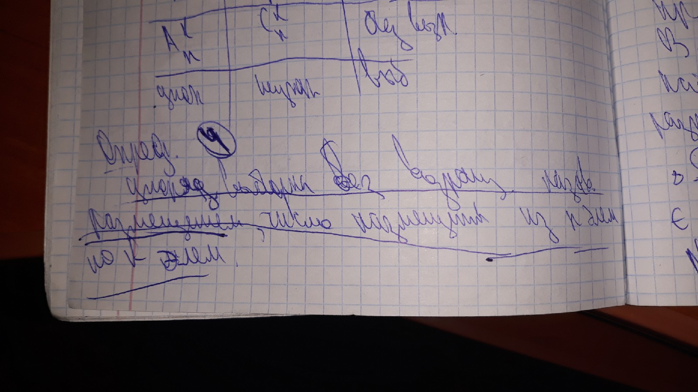 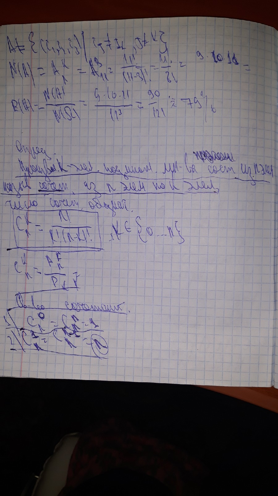5. Геометрические вероятности.
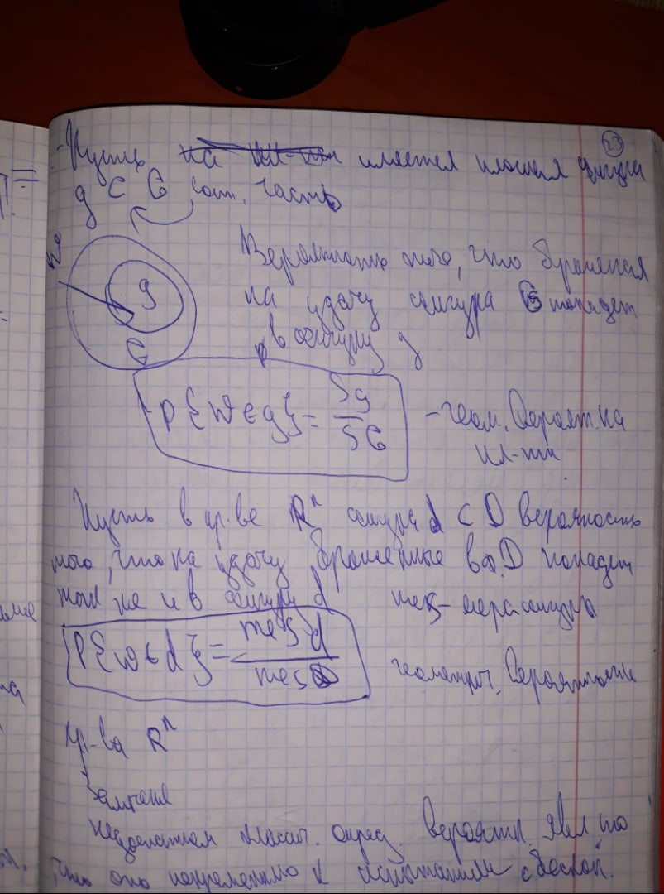6. Свойства вероятности.

7. Условная вероятность. Независимость, независимость в совокупности.


8. Формулы полной вероятности и Байеса.

9. Испытания Бернулли. Формула Бернулли.
10. Полиномиальное распределение.
11. Теорема Пуассона.
12. Локальная и интегральная теоремы Муавра- Лапласа.
13. Случайные величины. Функция распределения и её свойства.
14. Дискретные случайные величины. Закон распределения. Биномиальное, геометрическое и распределение Пуассона.


15. Математическое ожидание дискретной случайной величины и его свойства.
16. Дисперсия дискретной случайной величины и её свойства.
17. Теоремы о математическом ожидании и дисперсии числа появлений события в независимых испытаниях. Начальные и центральные моменты.
18. Непрерывные случайные величины. Свойства плотности распределения.
19. Равномерное, показательное и нормальное распределения и их числовые характеристики.
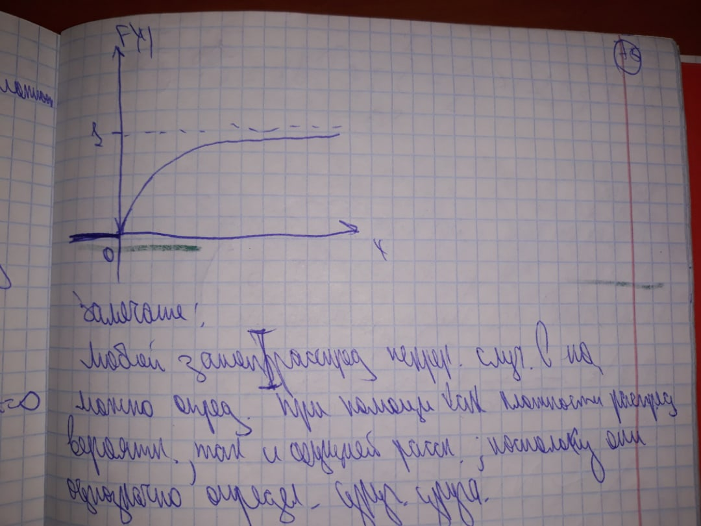
20. Теорема о нормальном распределении. Критерии независимости дискретной и непрерывной случайных величин.
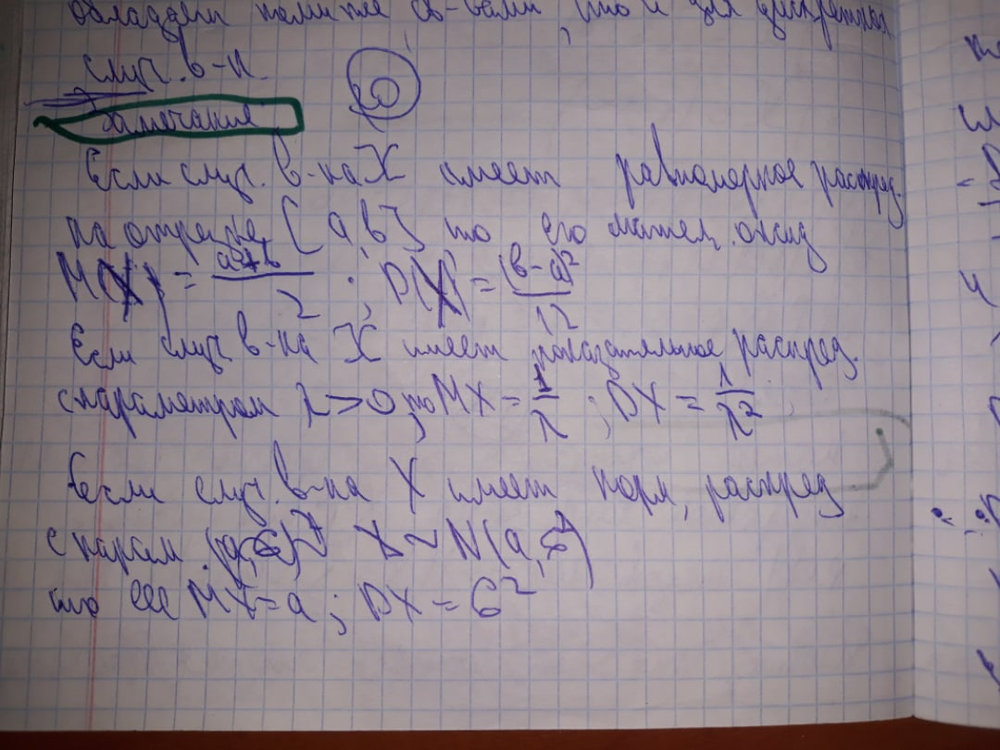21. Случайный вектор. Свойства функции распределения случайного вектора.
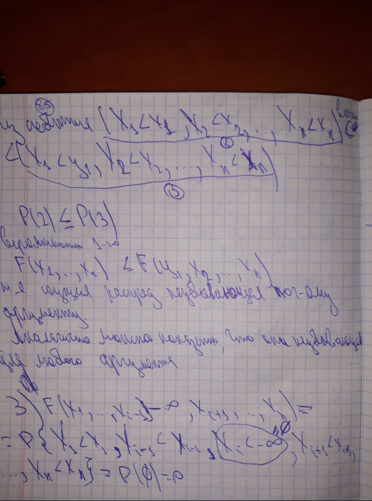 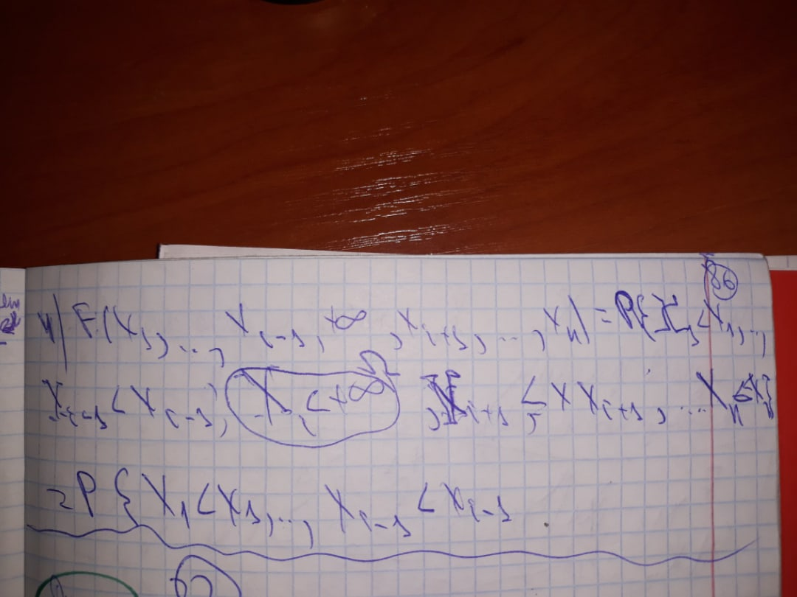22. Дискретный и непрерывный случайный вектор. Свойства плотности распределения случайного вектора.
23. Числовые характеристики системы 2 случайных величин. Ковариация, коэффициент корреляции и его свойства. Асимметрия и эксцесс.
24. Задачи математической статистики. Генеральная совокупность, выборка.
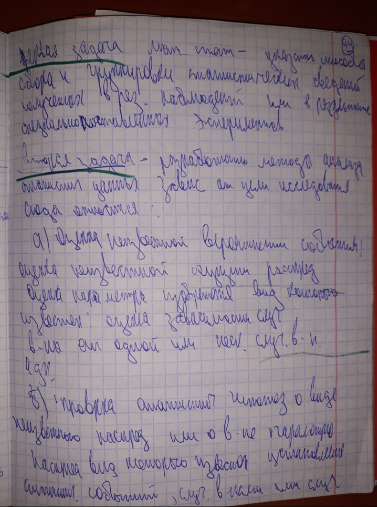 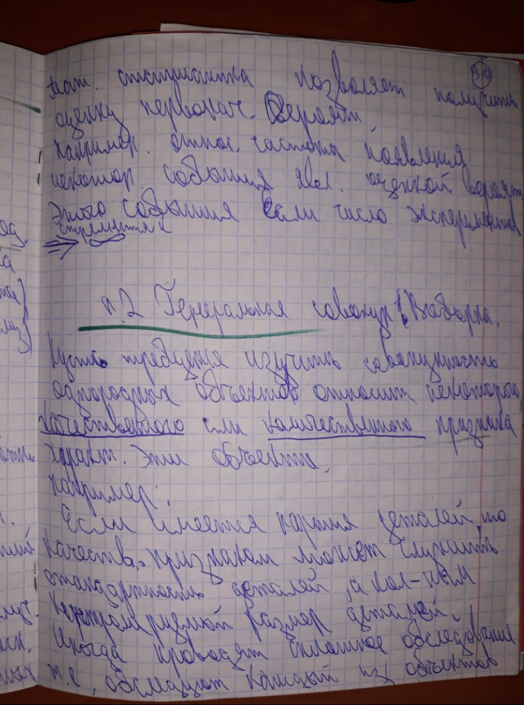25. Эмпирическая функция распределения. Генеральные и выборочные начальные и центральные моменты.
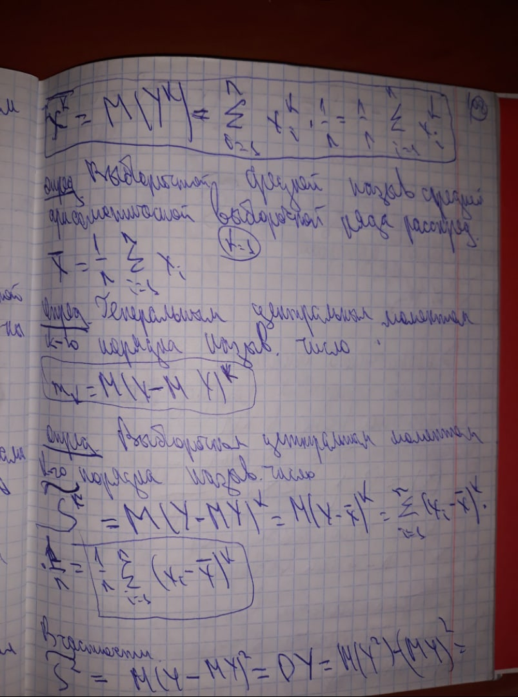26. Статистическое распределение выборки. Варианты. Полигон и гистограмма.
27. Точечные оценки неизвестных параметров. Несмещённые, состоятельные и эффективные оценки.
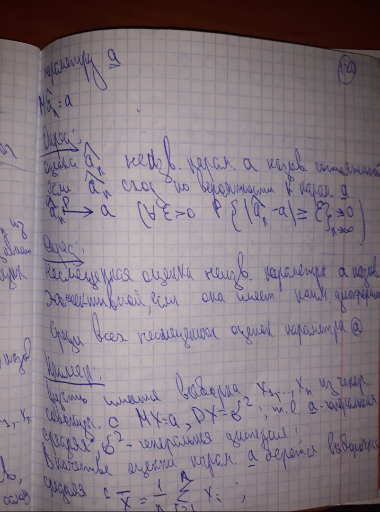28. Методы моментов и максимального правдоподобия.
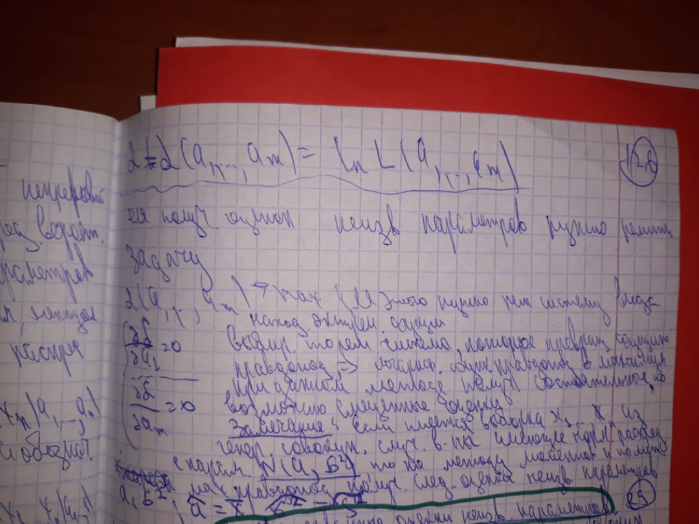29. Интервальные оценки неизвестных параметров. Доверительные интервалы для математического ожидания и дисперсии.